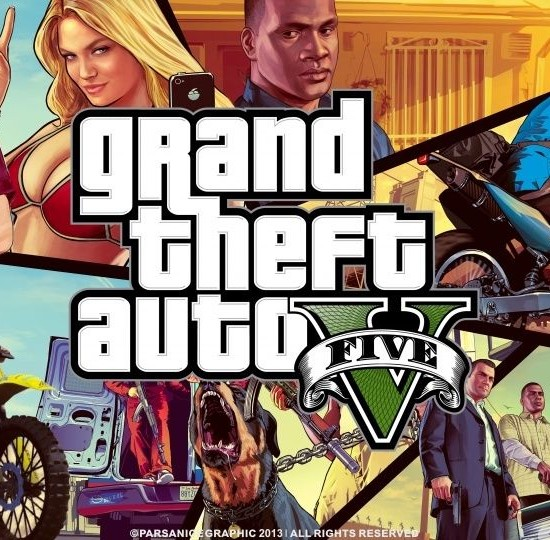
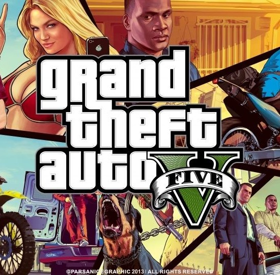

A Grand Theft Auto V egy akció-kaland videójáték, mely 2013. szeptember 17-én jelent meg PlayStation 3 és Xbox 360 konzolokra. Továbbfejlesztett változata Xbox One, PlayStation 4 platformokra 2014. november 18-án érkezett meg, míg a PC-s verzió többszöri halasztás után 2015. április 14-én jelent meg.
A Grand Theft Auto 5-ben a korábbi részekkel ellentétben nem egy, hanem három játszható főszereplő van: Michael De Santa, (igazi nevén Michael Townley), Trevor Philips és Franklin Clinton. Őket nem csak opcionálisan, hanem kötelezően ki kell választani, főleg egyes küldetések miatt, amit a játékos csak az adott karakterrel tud végrehajtani.
A GTA V-ben számos jármű kapott helyet a BMX-től a tankig. Jet-ski, monster truck, harci helikopter, jetpack és egyéb más nagyszerű jármű jelenik meg a játékban. A játékosok a GTA IV kis területével ellentétben ebben a részben sokkal szabadabban tudnak járművekkel repülni
 
